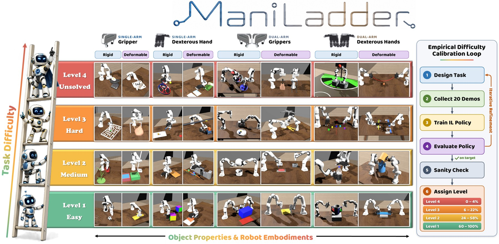

ManiLadder: Benchmarking Robot Manipulation Through a Categorized and Multi-Difficulty Level Task Ladder
arXiv preprint, 2026
IROS 2026 Workshop on Rethinking Bimanual Manipulation, Outstanding Paper Award
CoRL 2026 Workshop on SimBench2Real, Lightning Talk